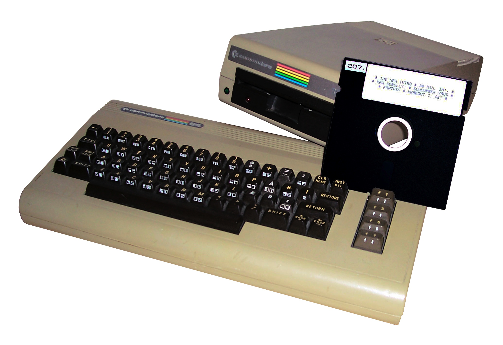

 The Commodore 64 was a bestselling, 8-bit home computer from the 1980s. It was created by Commodore International, and it entered the market in 1982. Around 17 million units are believed to have been sold.